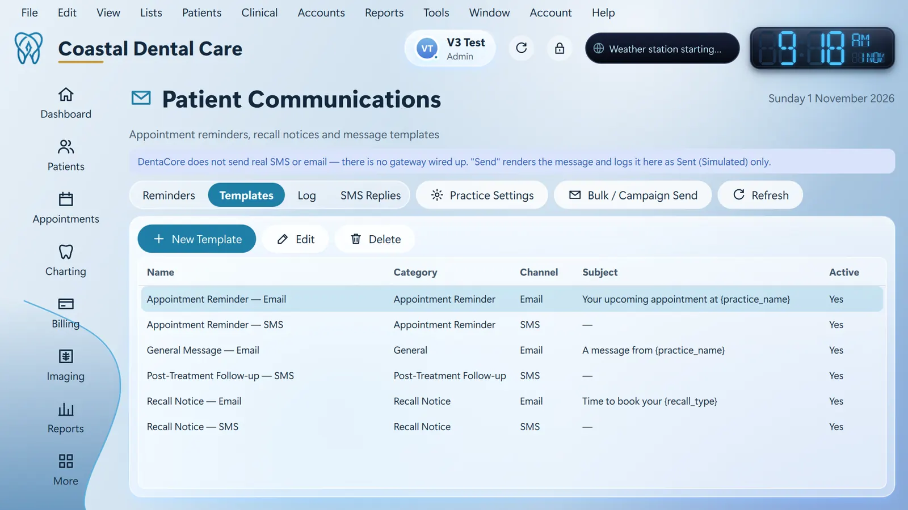
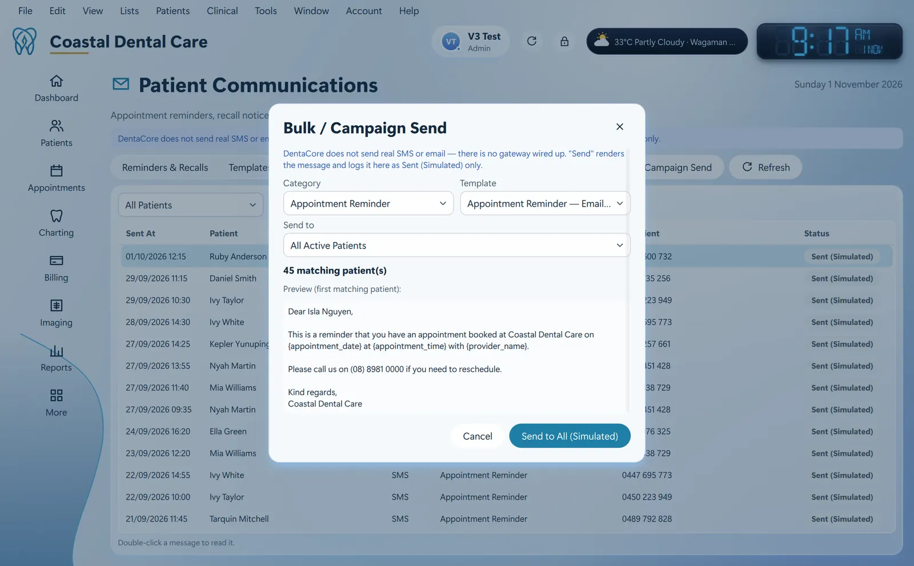
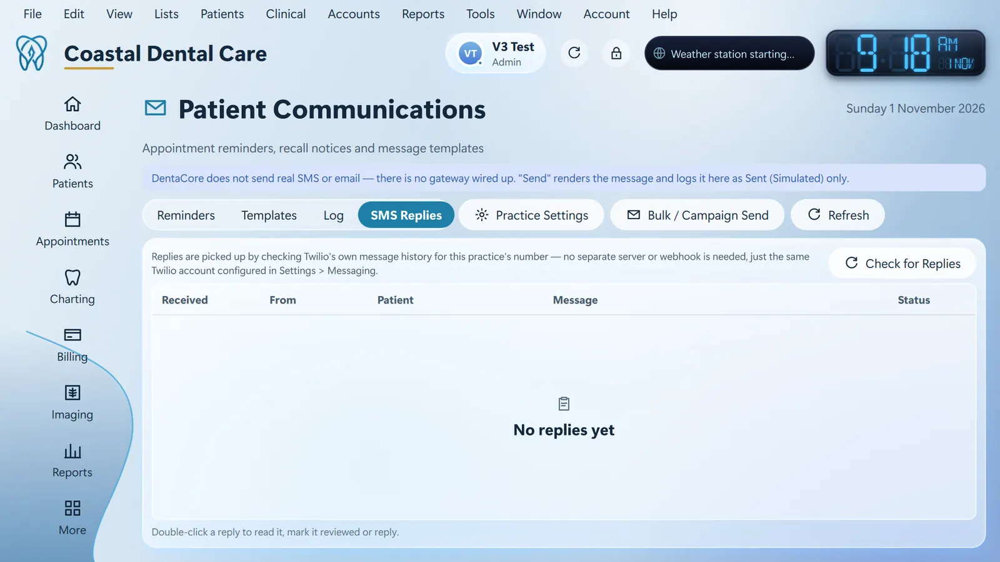
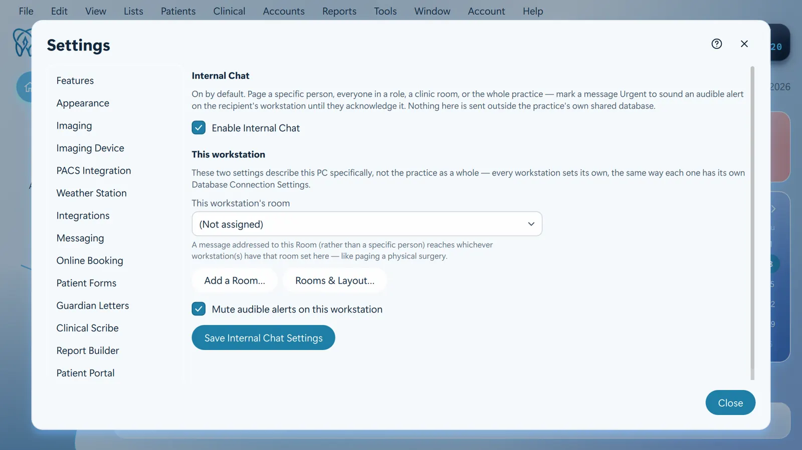

01 / 05 · Patient communications
Automatic reminders and recall notices
Settings → Messaging → Automatic sending
DentaCore can send reminders and recall notices by itself, so nobody has to remember.
- Reminders 24, 48 or 72 hours ahead, by SMS, email or whichever the patient has.
- Only between the hours you set (8 am to 8 pm by default), and no more than you choose in one go.
- Each appointment is reminded once. A recall notice goes no more than once a month.
- Every computer checks with the others first, so nothing is ever sent twice.
- A patient who replies STOP, or whose record says no automatic messages, gets none.
- Send What's Due Now sends straight away, and a note says what the last run did.

02 / 05 · Patient communications
Message templates
Lists → Message Templates
Write each message once and every patient gets it with their own details filled in.
- Merge fields for the patient's name, the appointment date and time, the dentist and the practice's name and phone.
- Templates by category (appointment reminder, recall notice) and by channel, since a text and an email read differently.
- Deactivate an old template without losing the history of what was sent with it.

03 / 05 · Patient communications
Send one message, or a whole group
Communications
Send a reminder or recall notice to one patient, or a campaign to many.
- Preview the merged message before it goes, and tweak the wording.
- Bulk Send picks a template and a patient group, shows how many it matches and a preview, and asks before sending.
- Messages go through your own SMS (Twilio) and email accounts. Each is logged as Sent or Send Failed with the reason; nothing is ever reported as sent when it wasn't.

04 / 05 · Patient communications
SMS replies and the communication log
Communications → SMS Replies
Texts from patients land in one inbox instead of a phone nobody's watching.
- Each reply is matched to the patient who sent it, newest first.
- Mark replies read, and reply through the normal send window.
- The Communication Log keeps every message sent to every patient, printable as a PDF.

05 / 05 · Patient communications
Internal chat and urgent messages
More → Internal Chat
Message other rooms and the front desk without leaving DentaCore.
- An unread count on the side menu.
- Urgent messages pop up on the other computer, and wait behind a locked screen with a note that one is waiting.
- Each computer knows which room it's in, so paging a room reaches the right screen.
- Ping Reception from a planned next visit drops straight into the chat.
